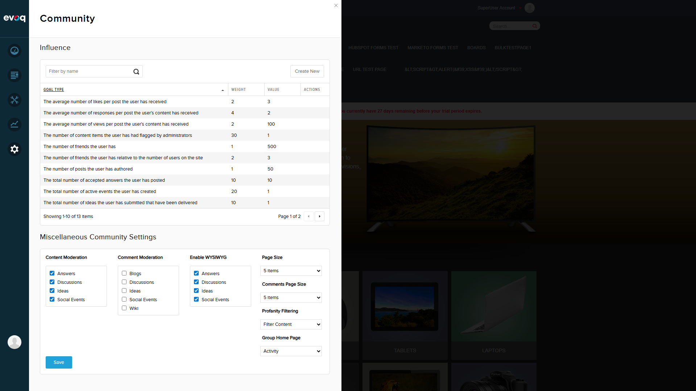
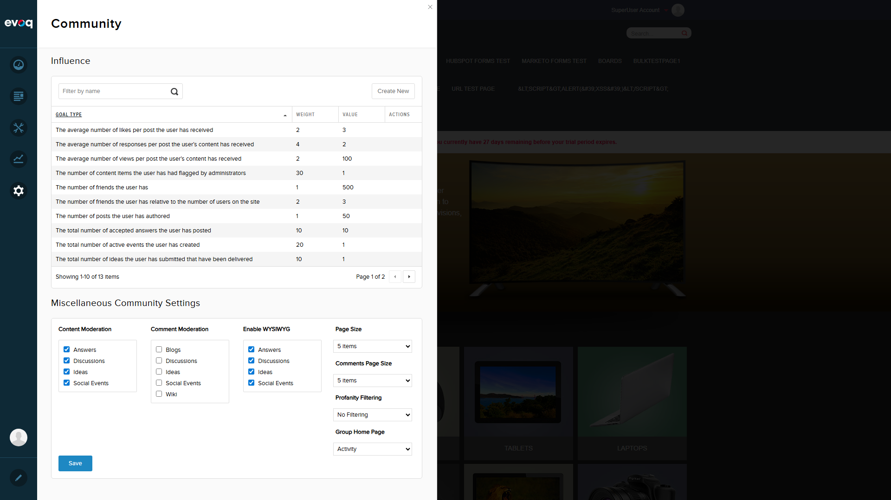

Feature Description
Configure profanity handling across all modules with options to filter content, prohibit content, or allow all content.
Feature Details
| Property |
Value |
| UI Location |
Admin > Settings > Community Settings > Settings tab |
| Feature Priority |
High |
| Dependencies |
CmxSettingsController, Profanity filter service |
| Relevant Files |
CommunitySettingsController.cs, CommunitySettings.js |
Test Summary
| Total Scenarios |
Passed |
Failed |
Overall Status |
| 4 |
4 |
0 |
PASS |
Scenario 1: Set Profanity Filter to 'Filter Content' PASS
Objective: Verify that the profanity filter can be set to 'Filter Content' mode which masks profanity in user-generated content.
Steps Executed:
- Navigated to Community Settings in the PersonaBar
- Located the "Profanity Filtering" dropdown under "Miscellaneous Community Settings"
- Changed the dropdown value from current setting to "Filter Content"
- Clicked the Save button
- Verified success message appeared: "Item successfully saved."
Screenshot: Profanity Filter set to "Filter Content"

Screenshot: Setting saved successfully
Observations:
- Dropdown correctly displays all three options
- Selection change is immediate and responsive
- Save operation completes with success notification
Scenario 2: Set Profanity Filter to 'Prohibit Content' PASS
Objective: Verify that the profanity filter can be set to 'Prohibit Content' mode which blocks submission of content containing profanity.
Steps Executed:
- Changed the dropdown value to "Prohibit Content"
- Clicked the Save button
- Verified success message appeared: "Item successfully saved."

Screenshot: Profanity Filter set to "Prohibit Content"
Screenshot: Setting saved successfully
Observations:
- Setting change works correctly
- UI updates immediately upon selection
- Save operation successful with visual confirmation
Scenario 3: Set Profanity Filter to 'No Filtering' PASS
Objective: Verify that the profanity filter can be set to 'No Filtering' mode which allows all content without filtering.
Steps Executed:
- Changed the dropdown value to "No Filtering"
- Clicked the Save button
- Verified success message appeared: "Item successfully saved."

Screenshot: Profanity Filter set to "No Filtering"

Screenshot: Setting saved successfully
Observations:
- "No Filtering" is option index 2, which matches the documented default value
- Setting saves successfully
- No errors encountered during operation
Scenario 4: Verify Setting Persistence PASS
Objective: Verify that the profanity filter setting persists after page refresh/reload.
Steps Executed:
- After saving "No Filtering" setting, refreshed the page (navigated to Default.aspx)
- Waited for page to fully reload
- Community Settings panel automatically opened
- Verified the Profanity Filtering dropdown still shows "No Filtering"

Screenshot: Setting persisted after page refresh - "No Filtering" still selected
Observations:
- Setting correctly persists across page reloads
- Data is properly saved to backend storage via CmxSettingsController
- GetSettings API correctly retrieves the saved value on page load
Initial State Screenshot

Screenshot: Initial state of Community Settings showing Profanity Filtering dropdown
Technical Notes
Code Implementation Details
- Backend Controller: CommunitySettingsController.cs handles GetSettings and SaveSettings API endpoints
- Frontend: CommunitySettings.js manages the UI with Knockout.js observables
- Storage: Settings are persisted via CmxSettingsController.Instance.SaveCmxSettings()
- Data Model: ProfanityFilter is stored as an integer (0=Filter Content, 1=Prohibit Content, 2=No Filtering)
Filter Options Mapping
| Option |
Value |
Behavior |
| Filter Content |
0 |
Masks profanity with asterisks or replacement characters |
| Prohibit Content |
1 |
Blocks submission of content containing profanity |
| No Filtering |
2 |
Allows all content without any profanity filtering (Default) |
Conclusion
All test scenarios for the Profanity Filter Settings feature have PASSED.
- All three filter options (Filter Content, Prohibit Content, No Filtering) can be selected and saved
- Settings persist correctly after page refresh
- UI is responsive and provides appropriate feedback
- Success notifications appear when settings are saved
Recommendation: Feature is working as expected and ready for production use.